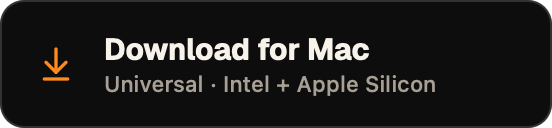
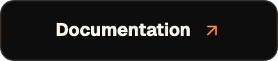
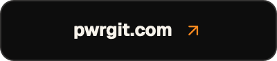

PwrGit · repository landing page
README header
GitHub is the landing page for most people who arrive at PwrGit, and the first screenful has one job: hand them the right binary. Six chips do that — three downloads, three places to go instead. This is the reference header for the Pwr family; PwrAgent and PwrSnap take the same system with their own accent and labels.
Composition · 836px content column
Same PNGs on both surfaces. Nothing here is theme-switched, and that is the point — see the rule below.
GitHub dark · #0d1117
PwrGit
Git for people working alongside an agent.





GitHub light · #ffffff
PwrGit
Git for people working alongside an agent.
Chips at 1× · 2× PNGs displayed at half
Download · 276×64
primary · the one tangerine chip on the page
secondary
secondary
Link · 200×44
secondary only — a second tangerine chip would compete with the download
Anatomy
Asset 276×64 and 200×44, written at 2×. README displays them at 250 and 180 so three download chips hold one row in GitHub's ~836px column.
Radius 12 on download, 10 on link.
Padding 18 leading, 14 between icon and text.
Title Geist Bold 15 / 13.
Subtitle system medium 11 — only Geist Bold is vendored, and Bold at 11 reads as a second heading.
Icons lucide
arrow-down-to-line at 20, arrow-up-right at 14 — published coordinates, stroke 2 on the 24 grid.Colour · app tokens, pinned in deviceRGB
#ffa24d → #ff8a1f
primary fill
primary fill
#160a00
--accent-on
--accent-on
#0d0d0d
secondary fill
secondary fill
#f7f3eb
title ink
title ink
#a8a094
subtitle ink
subtitle ink
#ff8a1f
--accent, icons
--accent, icons
Rules that decided the design
One opaque chip, not two theme variants
Every chip carries its own fill and clears contrast on white and on #0d1117 alike, so there is no
<picture> and no doubled asset count. It also keeps the header correct where <picture> is ignored: npm, VS Code's preview, GitHub mobile.Apple Silicon is the one primary
It is the build most arrivals want and the smaller download. Universal and Windows sit beside it in secondary, so the row still answers “which one is mine?” without a paragraph above it.
The subtitle names the build, not the benefit
“Universal · Intel + Apple Silicon”, “x64 installer”. Someone standing at a download chip is picking an artifact, and the second line is the only place that question gets answered.
Text that does not fit fails the build
A clipped label is silent in a PNG.
apps/desktop/scripts/generate-readme-chips.swift measures every label against its chip and exits non-zero rather than writing one — which is what makes the system safe to hand to a sibling with longer product names.Looked at DockDoor · took some, left some
Took
Centred icon, wordmark and one-line pitch above the fold.
A hero screenshot immediately under the chips — the app before the prose.
A short “ways to help” list at the bottom: star, file an issue.
Left
Download counters. DockDoor's are proof. PwrGit's would be a number arguing against the product.
for-the-badge stack shields. Swift / Xcode / Git / macOS tells a visitor nothing they came for.
Hand-rolled table of contents and back-to-top links. GitHub renders its own outline.